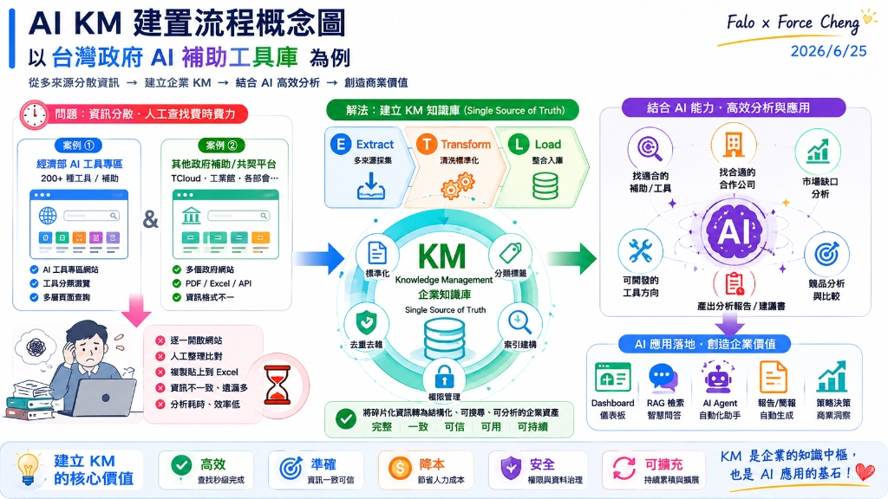
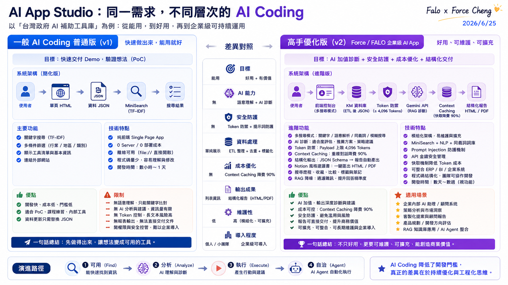

主題四：KM 建置與應用思維
本主題深入剖析企業知識管理（KM）與檢索增強生成（RAG）系統的建置觀念，以政府補助案作為載體，解構企業級 AI App 的設計 Pattern。

---
⚖️ AI Coding 實務對照：一般版 (v1) 與高手優化版 (v2) 的演進
在台灣政府 AI 補助工具庫的實戰開發中，開發者常面臨「能用就好」與「企業級落地」兩種截然不同的開發思維。我們透過以下兩張架構與功能對照圖，深入剖析其中的技術分野：


1. 一般 AI Coding 普通版 (v1) 的限制
普通版 v1 的核心目標是 「快速交付 Demo，驗證想法 (PoC)」。
- 技術特點：採用純前端 SPA 架構，資料儲存於靜態 JSON 中，使用簡易的 MiniSearch (TF-IDF) 進行關鍵字搜尋。這在開發初期非常高效，能在幾小時到一天內快速實現。
3. 延伸開發：企業級 AI 決策儀表板與統一戰情中心 (War Room) 規劃
在大數據與多來源整合的知識庫場景中（例如結合經濟部工業館與 Tcloud 的 244 筆補助專案），如何將結構化的 RAG 知識庫轉化為直觀、即時的商業決策與工程運維指標，是企業級 AI App 能否成功落地的分水嶺。
本專案將此延伸開發規劃為代表未來演進方向的「企業級 AI 統一戰情中心 (Enterprise AI Command Center)」，這對應了知識庫數據流中的 ETL 之 Load (L) 階段。
我們已將此戰情中心的雙軌大屏全景藍圖（原始資料大屏 A 版 vs 使用者行為審計大屏 B 版），以及拆解後的八大核心儀表板圖表元件（包含熱力圖、象限圖、折線走勢圖、Agent 佇列等）與詳細的技術/商業剖析，完整收錄於主題三的 ETL 實務中：
---
🗺️ 企業級 AI App 落地藍圖：全面合規與長期維運
正如上述對照，做得出來只是開始，要讓企業長期安心使用，必須將技術思維上升到產品與工程思維。根據 「AI App 企業落地藍圖」 的七大關鍵注意事項，企業級知識管理（KM）與 RAG 系統的落地必須落實以下防護維度：

- 資料與知識管理：這是 RAG 系統的基石。企業必須進行嚴格的「資料品質控管（確保準確與完整）」，建立「ETL 定期更新與監控機制」以保證知識庫的時效性，並透過「知識分類與標籤標準化」大幅提升向量比對檢索的精振度。
- 資安防護與治理合規：企業內部知識庫通常包含高度敏感的專利、法規或經營數據。因此，系統必須實施嚴格的「權限控管（限制誰可查閱哪些知識庫）」，防範「Prompt 注入攻擊」，並建立完整的「操作紀錄與稽核日誌 (Audit Log)」，確保每一次的 AI 檢索均有跡可循。
- 落地經濟學與成本效能：在大規模查詢情境下，Token 成本會迅速攀升。我們必須導入「Context Caching（上下文快取）」以降低長文本的重複處理花費，優化「快取與索引機制」，落實「聰明用資源，才能長久又划算」的落地指標。
---
📂 AI KM 建置範例：政府 RAG 智慧檢索與診斷系統
為了解決複雜政策與補助法規的查詢痛點，我們開發了「政府 AI 與資安成熟度檢核專案」與「RAG 智慧檢索系統」。在此案例中，我們貫徹了企業級 RAG 系統的 五大核心架構思維：
1. 務實主義 (Pragmatism)
拒絕盲目追求高複雜度與昂貴的第三方框架（如 LangChain），以最直觀、高效的「純 JavaScript 向量相似度比對（Cosine Similarity）」在瀏覽器端直接運行，快速驗證核心商業價值與 MVP。
2. 安全防禦 (Defensive Coding)
針對企業內部可能存在「無網際網路、無外部 DNS、甚至嚴格限制 CORS」的極端內網環境，設計 `no-cors` 探針與自動降級策略（Fallback），在 API 無法連通時自動切換至離線預置數據庫。
3. 落地經濟學 (Economics)
深度優化 Token 消耗，前端設計「本地快取機制（LocalStorage Cache）」，避免重複查詢相同問題而產生不必要的 API 花費。同時在 UI 置入即時 Token 消耗與台幣花費監控面板，強化團隊的成本控制意識。
4. 結構化交付 (Structured Output)
強制要求大模型（LLM）輸出符合嚴格 JSON Schema 格式的數據，並在代碼端設計「自動修補與校對引擎」，確保輸出的診斷報告能 100% 與 ERP 的資料庫欄位無縫對接。
5. 零運維成本 (Serverless/Static)
採用 100% 靜態網頁架構（HTML/CSS/JS），無需部署資料庫或後端伺服器，免去高昂的維護成本與各種潛在的伺服器漏洞安全性威脅，極適合快速部署於內部儲存空間。
📓 NotebookLM 整合運用
企業在導入知識管理 (KM) 時，除了自行建置 RAG 系統，亦可深度整合與搭配 Google NotebookLM 作為協作與提煉工具。為了克服 NotebookLM 網頁端手動操作與單兵作戰的限制，我們規劃了以下兩種企業級整合運用模式：
1. 結合 Prompt 管理器 (Prompt Manager Integration)
NotebookLM 的強大在於其基於來源資料的理解與互動，但不同部門（如研發、業務、財務）在提煉知識時所需的輸出格式與視角各有不同。透過導入「企業統一 Prompt 管理器」，同仁可快速調用標準化的系統提示詞（System Prompts），在 NotebookLM 內進行一致性的高質量引導：
- 結構化大綱生成：統一規定 NotebookLM 生成特定格式的專案審查清單或合規風險矩陣。
- 特定視角角色扮演：例如以「資深 ERP 顧問」或「政府補助稽核員」的視角，對導入的專案文件進行深度詰問與核對。
2. 建立企業共用入口與 NotebookLM CLI 整合 (Unified Portal & NotebookLM CLI)
為了解決傳統上需要逐一手動上傳文件至 NotebookLM 的痛點，企業可構建一層「統一知識共用入口」（Web Portal）。此入口底層結合 NotebookLM CLI (命令列介面工具) 或自動化腳本，實現以下流程：
- 自動化文件同步：員工只需將發票、補助計畫書或合約拖入企業 KM 系統，底層腳本便會自動調用 NotebookLM CLI，將文件同步上傳至指定的 Google Drive 資料夾或 Notebook 來源庫中。
- 跨團隊共用導覽：透過共用入口，團隊能一鍵將自動編排好的 Notebook 分享給專案利害關係人，實現組織級的知識快速對接與共用。